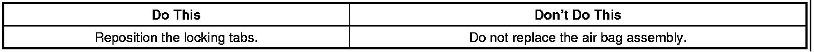
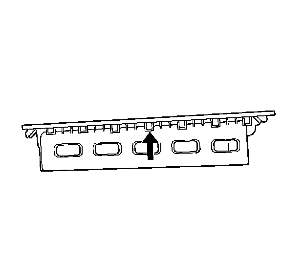
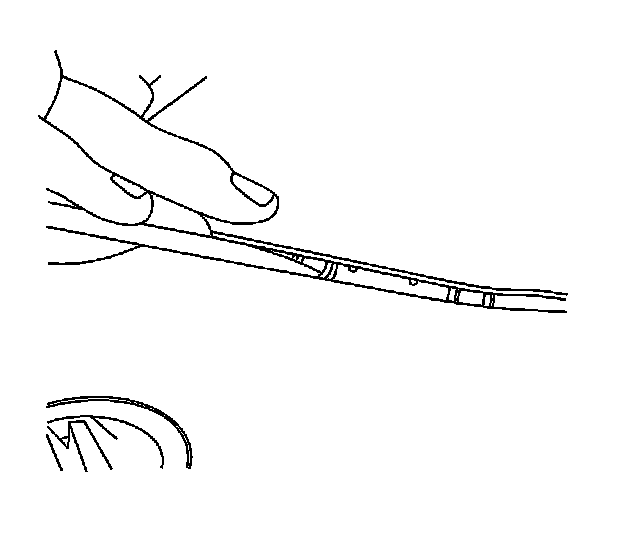

Interior - Passenger Air Bag Is Not Flush With Dash
TECHNICALBulletin No.: 08-09-41-005B
Date: April 06, 2011
Subject: Passenger Side Air Bag Door Not Flush with Dash Pad/Warped (Reposition Locking Tabs on Air Bag Panel)
Models:
2007-2012 Cadillac Escalade, Escalade ESV, Escalade EXT
2007-2012 Chevrolet Avalanche, Silverado, Suburban, Tahoe
2007-2012 GMC Sierra, Yukon, Yukon XL, Yukon Denali, Yukon Denali XL
Supercede:
This bulletin is being revised to update the model years. Please discard Corporate Bulletin Number 08-09-41-005A (Section 09 - Restraints).

Condition
Some customers may comment that the air bag door does not sit flush with the instrument panel (dash pad) or that the door appears warped.
Cause
This condition may be caused by a trim locking tab that is not fully engaged in the mounting bracket.
Correction
Reposition the trim locking tabs on the air bag panel following the procedure below.
Important
This repair is for appearance reasons only and has no effect on the operation or performance of the air bag.
1. Disable the SIR system. Refer to Inflatable Restraint Instrument Panel Module Replacement for Disabling and Enabling the SIR system.

2. The locking tab will be bent upward. Using a plastic trim stick, gently move the panel up to expose the deformed locking tab.

3. Straighten the locking tab using the plastic trim stick.
4. Press down on the air bag panel to seat it in the correct position.
5. Enable the SIR system. Refer to Inflatable Restraint Instrument Panel Module Replacement for Disabling and Enabling the SIR system.
Warranty Information
For vehicles repaired under warranty, use the table.

Disclaimer